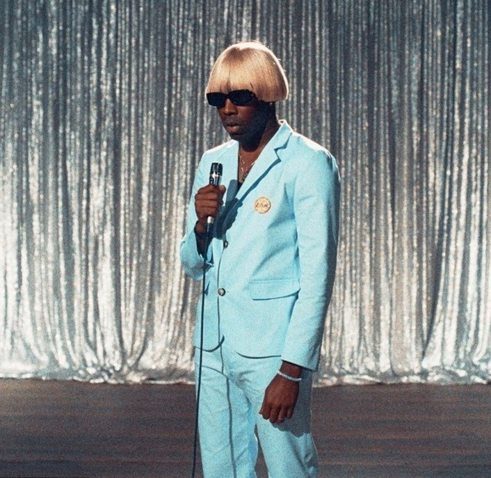
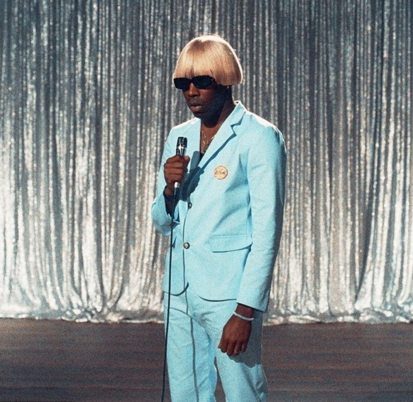

My musical taste has always been people going against the basic path. Both the artist above are currently my favorite rappers even with Juicewrld (left picture) passing away 3 years ago. These guys connect all different genres of music into their songs and that merge of music is all that I ever want to listen to. Mixing rock and live bands with rap is the Best thing that I have ever heard
Talking about me enjoy bands I happen to enjoy Nirvana's music. There grudge style is good to listen to and their live performances were fun to watch on youtube since I was not alive.